Interacting with Customers¶
The Interaction Pane¶
Compose Responses¶
Agents can respond to customers by typing their messages in the text editor. 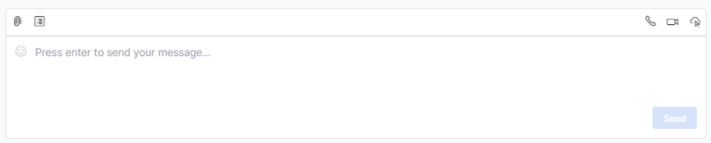
Agents can type their responses in the text editor and send the message by clicking the Send button on the bottom right corner. Pressing the Tab button on your keyboard shifts the focus to the Send button. You can also press Tab + Enter to send a message. 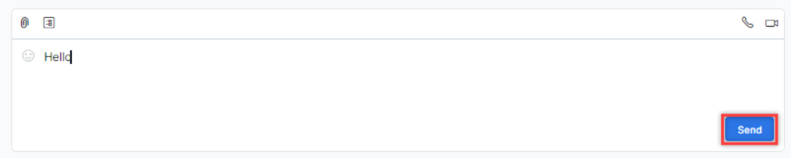
Note
You can still press Enter to send messages. Pressing (ctrl+enter / shift+enter) on Windows and (ctrl+return / shift+return) on Mac creates a new line.
Agents can send a standard response to the customer from a pre-configured library. Press / in the text editor to display the standard response templates window. 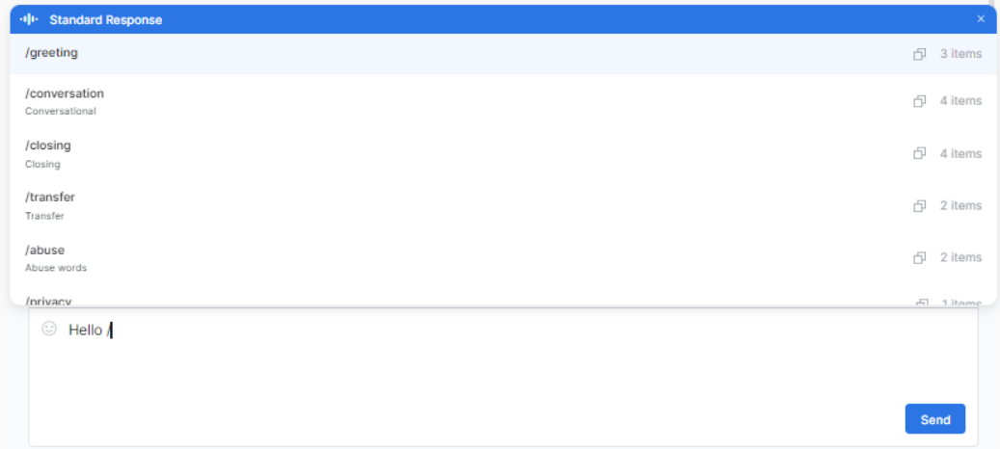
Pressing Escape after typing “/” closes the standard response window.
When translation is enabled: Responses appear in the agent’s selected target language in both the text editor shortcut command and the response widget.
When translation is disabled: Responses appear in the conversation language, as set through Agent Utils at the time of agent transfer, ensuring they are not limited to the application language.
AI-enhanced Compose Text Box¶
Using the AI-enhanced compose text box, agents can create customized responses to address customer inquiries, concerns, or issues. They can also add personal touches to their messages to make the communication more human and empathetic.
There are three choices available: 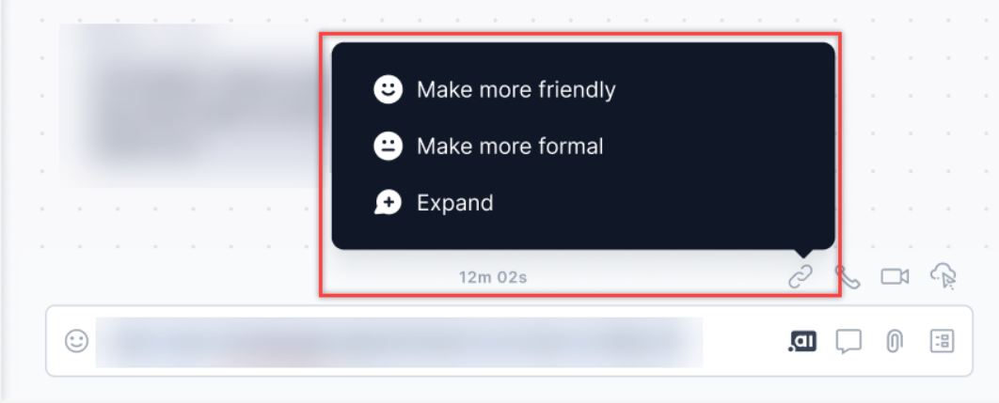
- Make more friendly: This option rephrases the draft response to make it more friendly and informal. For example, the formal draft response “Your mortgage appointment has been scheduled for Jun 24, 2023, 1 pm” is rephrased as “Great news! We’ve scheduled your mortgage appointment for Jun 24, 2023, at 1 pm.”
- Make more formal: This option rephrases the draft response to make it more formal. For example, the draft response “Your mortgage appointment has been scheduled for Jun 24, 2023, at 1 pm” is transformed into a more formal response, “We would like to inform you that your mortgage appointment has been scheduled for Jun 24, 2023, at 1:00 pm.”
- Expand: This option expands the draft response. For example, the draft response “Your mortgage appointment has been scheduled for Jun 24, 2023, at 1 pm” is elaborated as “We would like to notify you that your mortgage appointment has been successfully scheduled for June 24, 2023. Please arrive promptly at 1:00 pm for your appointment.”
-
Rephrase: This option allows agents to elevate the formality of their writing, making it suitable for business or any other formal contexts.
This feature can be enabled from Generative AI Tools > GenAI Features > Agent Response Rephrasing.
Add/Delete Hyperlinks in the Text Editor¶
Agents can add/delete hyperlinks in the text editor while responding to the messages.
Steps to add/remove hyperlinks:
-
Highlight the text that you want to hyperlink and click the Add Link icon.
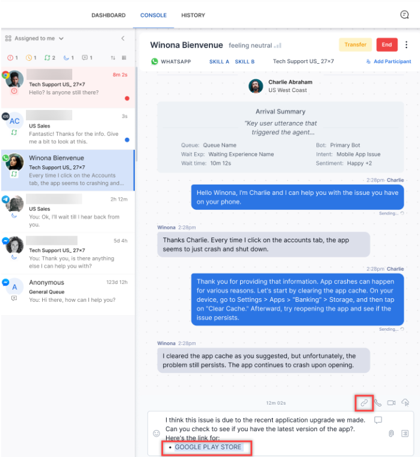
-
In the Add Link dialog box, do the following:
-
Select the web address option and enter the URL in the box, for linking a web page.
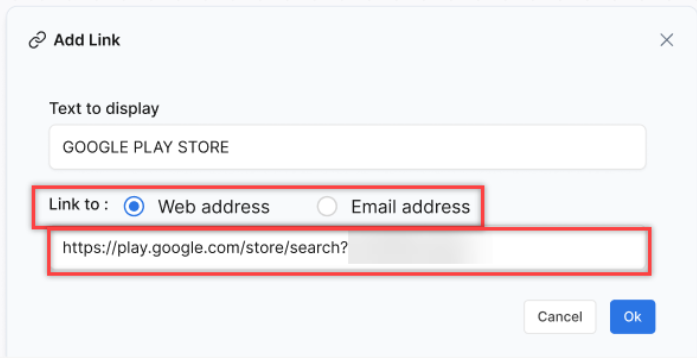
-
For linking an email address, select the Email Address option and enter the email address in the box.
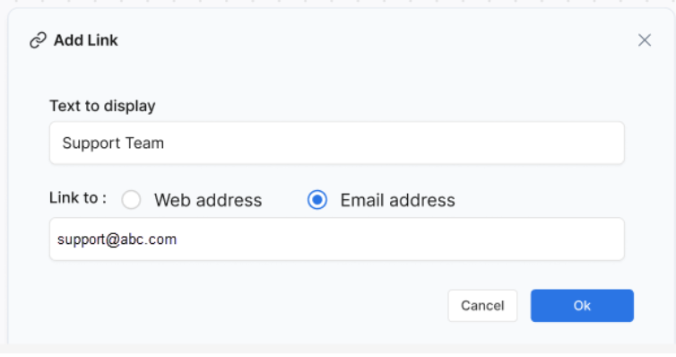
Note
The highlighted text appears in the Text to display field.
-
-
Click Ok. The selected text is hyperlinked.
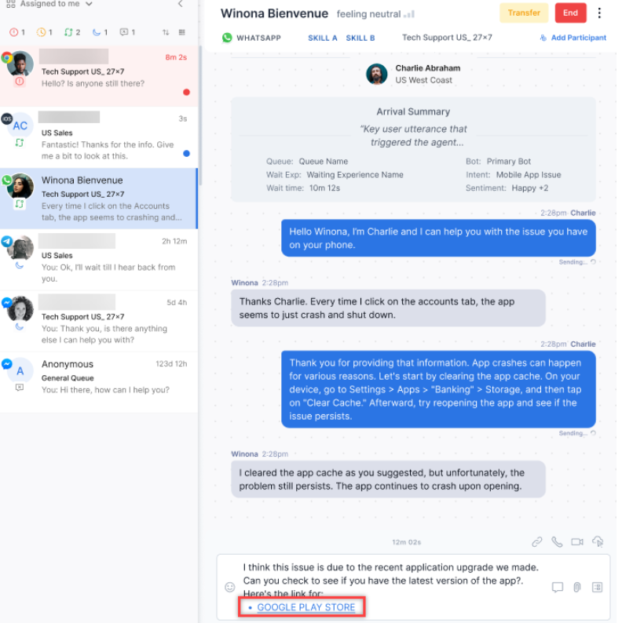
-
Hover over the hyperlinked text to view the following options:
- Open
- Break Link (icon)
- Edit
- Press Enter to send the message.
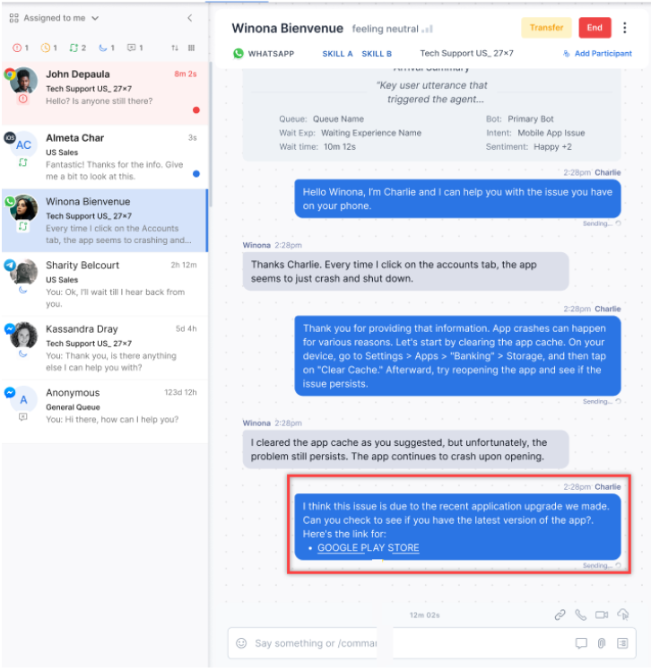
Viewing New Messages in the Console¶
When agents are reviewing earlier parts of a conversation, and a new message arrives while you are scrolled up, a New Message button appears at the bottom of the conversation thread. The button also displays the number of unread messages. To view the latest message, click the New Message button. The most recent message is displayed. 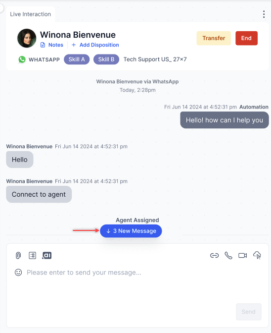
Resend Message When Network Disconnects¶
The following table lists scenarios with expected results in case of a network failure while an agent attempts to send a response.
| SCENARIO | RESULT |
|---|---|
| When an agent sends a message | “Sending” appears on the chat window. |
| If the message is sent successfully | “Sent” appears on the chat window. |
| If the network is disrupted | The chat window is disabled. Undelivered messages appear as “Not Delivered” with the Resend icon in the compose bar’s left corner. |
| When the network is restored | The chat window is enabled. |
| If the resend icon is clicked | The message is sent again. |
| If the conversation is terminated | The Resend icon does not appear. |
| If the page is refreshed | The undelivered messages do not appear. |
Audio and Video Calls with Customers¶
Agents can request the customer for an audio or video call during the chat conversation if required. Clicking the Audio or Video Call icon initiates a call. 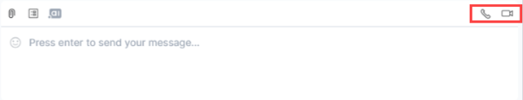
Note
- Accounts using Voice Gateway and AudioCodes can access the video call option.
- Agents must close the chat interaction and the audio/video call separately, each with its own disposition.
Manual Outbound Call¶
Agents can initiate manual outbound calls from the agent console. Following are the conditions under which agents can or cannot initiate outbound calls. These rules ensure efficient call management while maintaining system routing integrity.
Rules for Outbound Calls
- Initiating Outbound Calls from Any Status
- Agents can initiate outbound calls from any status within the agent interface.
- Exceptions:
- Agents cannot initiate outbound calls when their status is "System Away" for both Chat and Voice interactions.
- Agents cannot initiate outbound calls when their status is "System Busy" for voice interactions.
- Outbound Calls During Digital Interactions
- Agents can initiate an outbound call even when handling digital interactions.
- If an agent's slots are full and their status is "System Busy," they can still initiate an outbound call.
- Inbound Voice Interaction Restriction
- Agents cannot initiate an outbound call if they are handling an existing inbound voice call.
Outbound Calling Button
- The outbound calling button is disabled:
- When agents are in a status that does not permit outbound calls (for example, System Away for both Chat and Voice interactions, System Busy for Voice interactions).
- When agents are handling an inbound voice call.
- When agents are handling an outbound call.
Handling Multiple Outbound Calls
Agents can initiate a secondary outbound voice call only after completing the ongoing call. This approach helps agents manage their workload effectively and provide undivided attention to each customer interaction.
Status Updates
When an agent initiates an outbound call, the system automatically changes the agent's status to "System Busy". This automatic status update helps manage agent availability and workload distribution, ensuring efficient call handling and resource allocation.
Outbound Dialer¶
The outbound dialer has the following functionalities:
-
Search Bar: The search bar on the dialer interface allows agents to enter keywords or partial numbers to find configured contacts quickly.
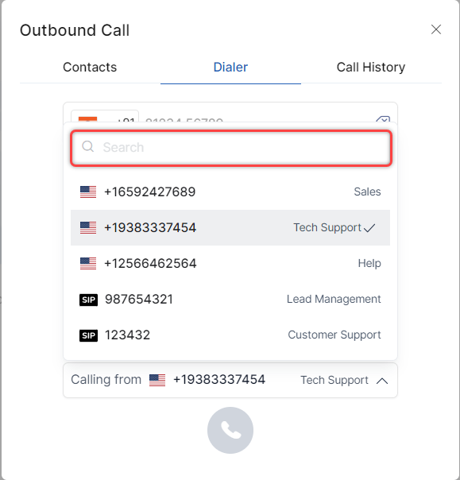
-
International Subscriber Dialing (ISD) Code Update: The dialer automatically adjusts the outbound phone number’s ISD code based on the last used country code. This streamlines the process for agents making calls to different regions. For example, if an agent selects India as the country but enters a phone number from the USA, the dialer automatically changes the country to the USA.
-
Phone Number Formatting: The system displays the phone number in a standardized format when an agent enters it for dialing, regardless of whether the original number contains hyphens or brackets, as long as the format is valid (for example, 090-1234-5678 or (123) 456-7890).
-
Validation and Error Handling: An error message is displayed if an invalid number is entered (for example, incorrect length or characters). The call button is disabled until a valid number is entered, preventing accidental calls to inaccurate numbers.
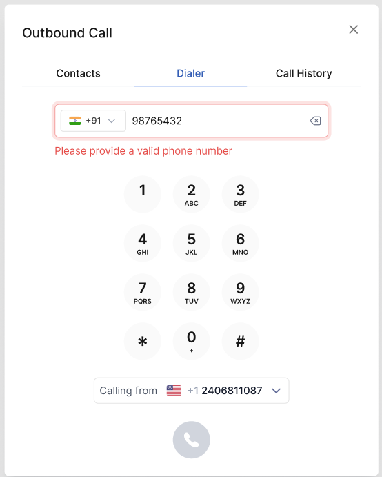
-
Enable Call Controls during ringing: Turning on this toggle allows agents to use the call control features (mute, hold, keypad, transfer) when the call is in the dialing phase. To enable this functionality, refer to the Permissions section.
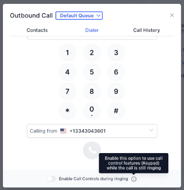
Agents can make outbound calls to the customers as follows:
-
Click the + button on the conversation tray and click Outbound Call. The dial pad is displayed.
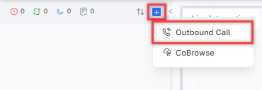
-
Click the Calling from button on the Dialer tab, and select the number for placing the outbound call. Agents can use phone numbers or configured SIP trunks while making outbound calls.
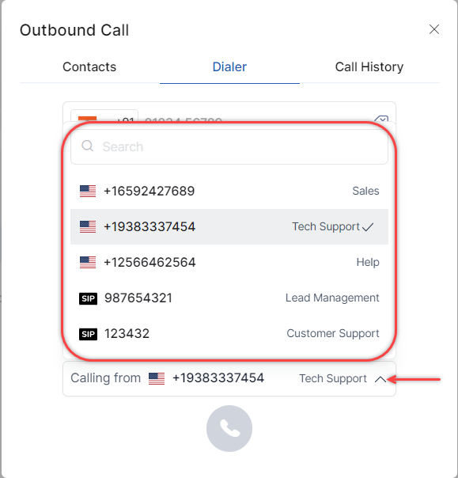
-
Agents can dial the outbound calls in two ways:
-
Enter the phone number with the country code, and click the Call button to place the outbound call.
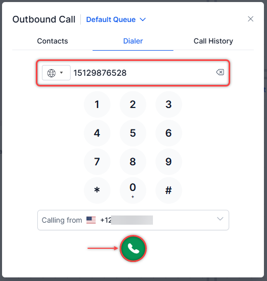
-
Select the country code from the dropdown, enter the phone number without the country code, and click the Call button to place the outbound call.
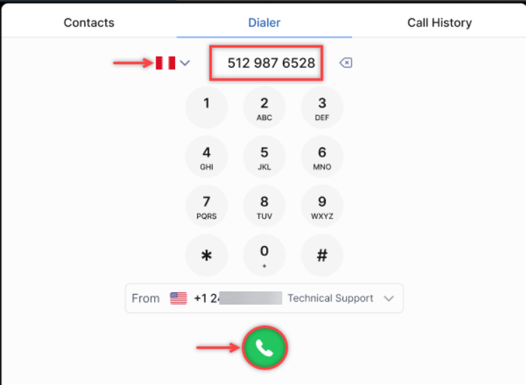
The following scenarios are possible:
-
A user enters “123124”:
-
By default, no country code is selected, and no country code validation is made. A call is directly placed to this number.
-
If the user has already dialed a call with a US number, they should be able to change the country code to unknown.
-
-
A user pastes “123121”:
-
Initially, a validation error is displayed if the number does not match the defined format for the default country.
-
The user can change the country code to unknown and a call is directly dialed to this number.
-
-
User pastes/enters “+91987654321”:
- The country code is selected as India and the call is dialed.
-
User pastes “+919876543”:
- A validation error is displayed and the call button is disabled.
-
Note
The country code defaults to the last dialed country. If no calls are dialed, the default country code is the US.
-
Inbound Click-to-Call Interaction¶
Agents receive the Click-to-Call interaction in the Live Interaction pane, similar to an inbound voice call. The system displays the metadata and prior chat transcript to the agent. During the call, agents can pause and resume recording when handling sensitive information. After the call ends, the system stores the transcription and disposition summary. Learn more. 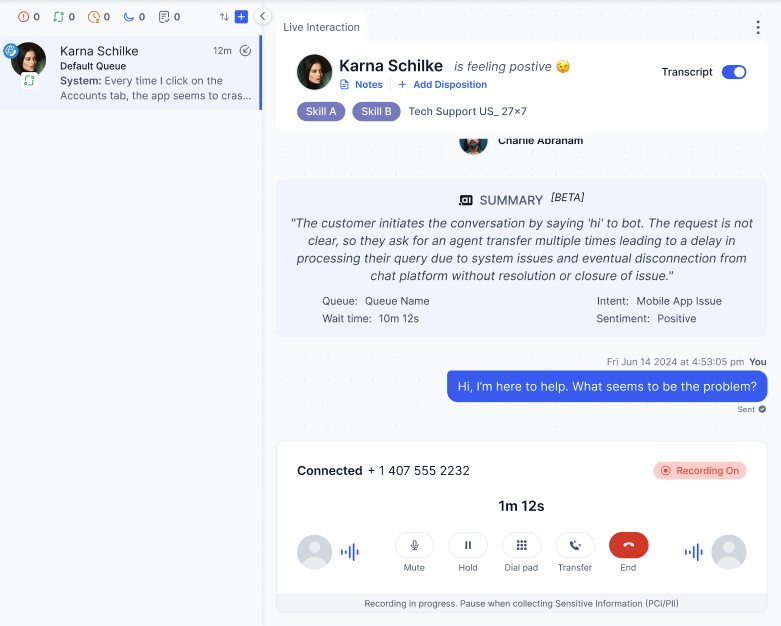
In addition to After Call Work (ACW), Agents also have access to the following call controls:
- Mute
- Unmute
- Hold
- Resume
- Recording – Pause and Resume
- Transcription – Pause and Resume
- Transfer – Internal
Voicemail¶
If auto answer mode is enabled in Agent Settings, the transcript and recording appear automatically in the conversation tray of the agent.
If manual mode is enabled, a notification is displayed on the Next in Queue Notification panel. The agent must accept the voicemail, although no inbound conversation slots are consumed. 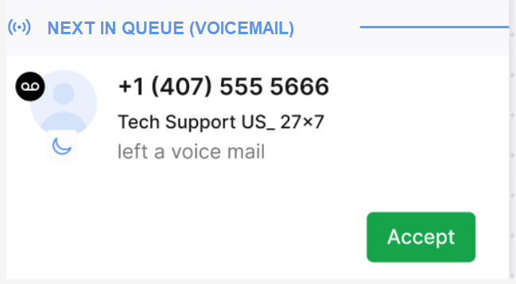
When the agent accepts the voicemail, the transcript and recording are displayed on the interaction pane. The agent can play, transfer, call (outbound), and download the voicemail from the interaction pane. 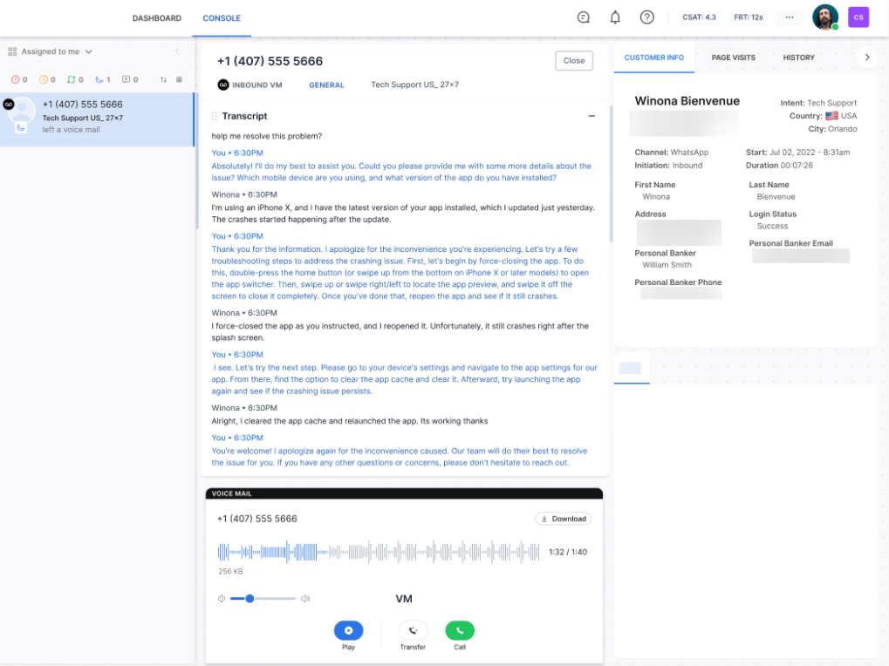
Callback Option¶
You can call the customer as follows:
-
Click the Call button on the VOICE MAIL panel.

-
The outbound call dialer is displayed. Click the Call button to initiate the outbound call.
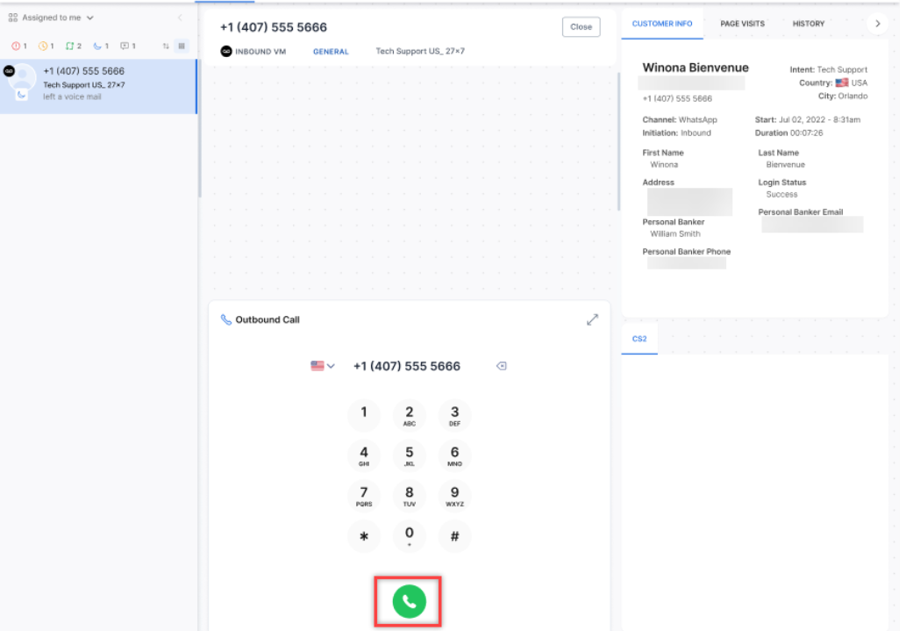
-
The agent can continue the conversation.
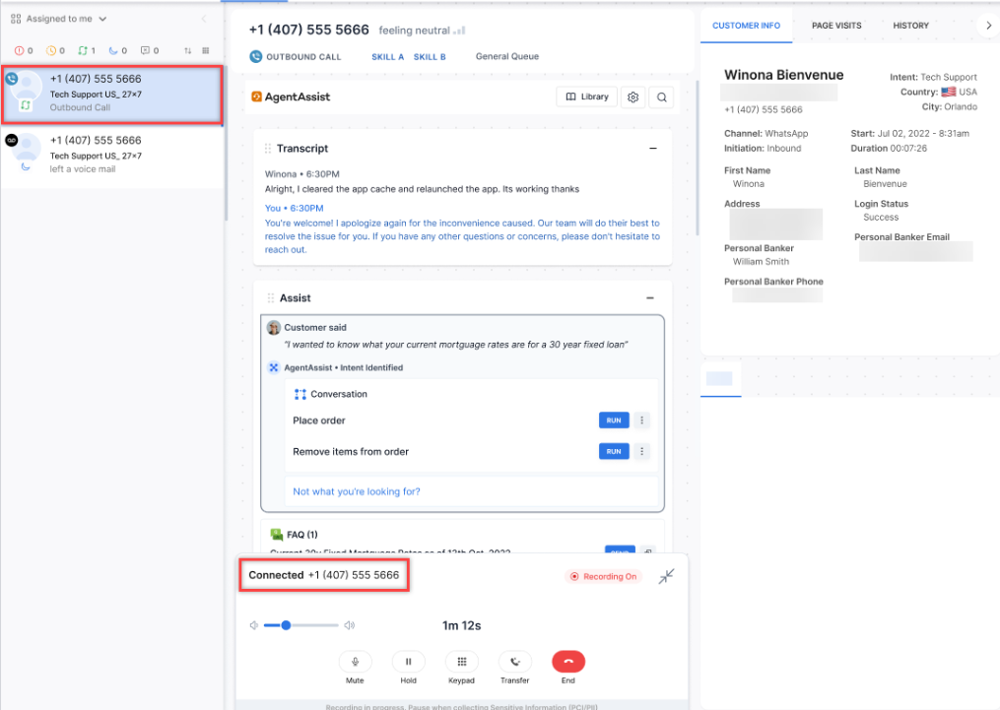
Consult Call, Conference Call, and Warm Transfer for Voice Calls¶
Agents can initiate Consult calls, Conference calls, and Warm Transfer voice calls while interacting with customers. It increases agent efficiency by allowing the initiating agent to share relevant context with the receiving agent before transferring the call. To ensure effective call handling, the receiving agent provides the necessary information, leading to smoother transitions and improved customer outcomes. Additionally, this feature enables seeking expert opinions during customer calls.
Consult Call¶
Selecting an agent from the transfer list activates the consult and subsequent merge to a conference call.
The agent chosen for consultation must be available and have zero load occupation. If an agent is brought in for consultation, their slots remain occupied throughout the consultation and conference call.
During the consult call, the system automatically places the customer on hold, allowing internal agents to communicate with each other. All calls are recorded if recording is enabled. Calls can be transferred to external agents by pre-saving their phone numbers through an API.
The initiating agent can switch to the original customer call if needed, and vice versa, using the Swap functionality. The initiating agent can merge the two calls, converting them into a conference call.
Consult Call to a Queue (Voice Channel Only)¶
The “Consult a Call to a Queue” allows agents handling voice calls to initiate a consult with an available agent from a selected queue. When the agent chooses a queue during the consult action, the system displays a list of agents who belong to that queue, are in “Available” status, and are not currently handling any assignments or active calls for that queue. The list appears in alphabetical order. The agent can select one agent from the list, after which a "Consult" button becomes available. Clicking this button initiates a consult call, which proceeds only if the chosen agent remains available at the time of connection.
During the consult, the agent can use existing call control features such as Swap, Merge, and Transfer. Once the consult call ends—either by the consulting agent or the internal agent—the system automatically routes the agent back to the original caller leg without requiring manual intervention.
Conference Call¶
Up to 4 supervisors, and the primary agent, can join the same conference call from the contact center side. 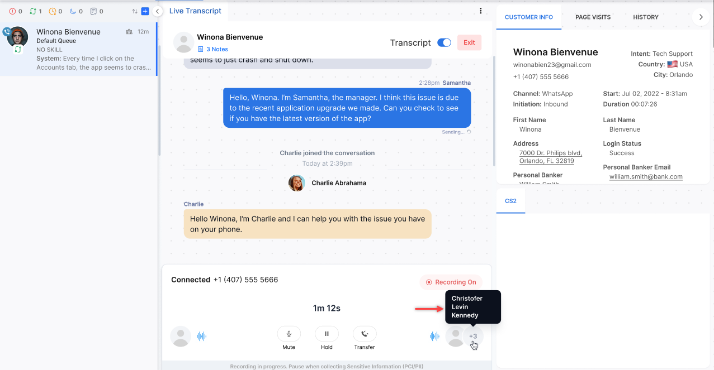
If a network disruption occurs, only the affected participant will be disconnected. They can rejoin the conversation seamlessly. Agents and supervisors can manage only one call at a time. 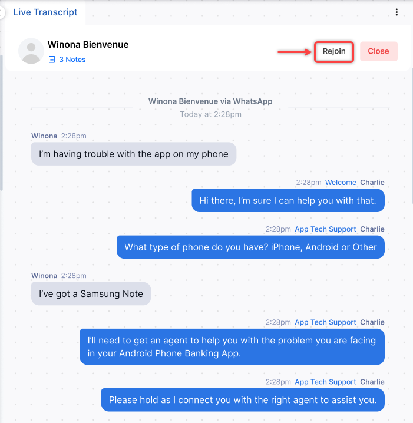
When a supervisor joins a call, their slot will be consumed, and their status will change to "system busy" for both chat and voice interactions. All chat transcripts from supervisors will appear in yellow.

If an agent leaves the call, the supervisor will have complete control of the conversation.
Each participant in the conference call can transfer the conversation or exit the call. Clicking the transfer button will push the conversation to a queue or a target agent, who will receive an incoming request.
The CSAT will be linked to the last agent who handled the conversation. If a user drops off, the primary agent (the longest participant) will complete After Call Work (ACW).
Warm Transfer¶
Following the consult or conference call, the initiating agent can proceed with a warm transfer by clicking the “Forward” button.
Limitations¶
| Category | Sub-category | Detail | Scenario |
|---|---|---|---|
| Consult Calls | Ongoing consult call | A conference call cannot be initiated during an ongoing consult call. | - |
| Consult Calls | Post Consult call is merged | A conference call cannot be initiated during an ongoing consult call. | When the agent and user are on call and the agent initiates a consult with the Supervisor: (a) If the consult is merged, then a conference is not allowed. (b) If the Supervisor has dropped from the consult call, then the conference will be allowed. |
| Consult Calls | Ongoing conference call | Consult calls are restricted during an ongoing conference call. | - |
| Consult Calls | Post-conference call ends | Consult calls are restricted even if the ongoing conference call ends and the call is only between the user and the agent. | When the agent and user are on a call and the supervisor joins from the monitor tab, it gets converted to a conference call. Even if the Supervisor exits, the call will still be considered a Conference. |
| Call Transfers/Consult | Outbound calls | Call transfers and Consult calls are restricted to Outbound calls. | - |
| Agent AI Widget | Ongoing conference/consult | Agent AI Widget should be hidden during ongoing conference/consult calls. | - |
Call Transfer¶
Steps to initiate a Call Transfer:
-
Click the Transfer button to initiate the transfer.
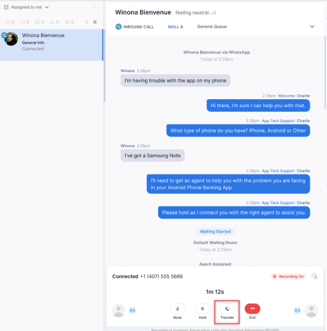
Recent transfer results are displayed.
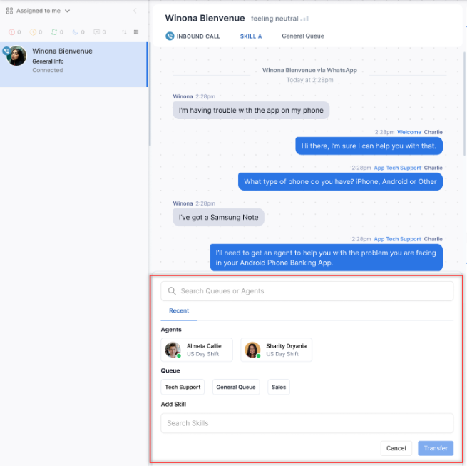
-
You can search for an Agent or Queue to transfer the call.
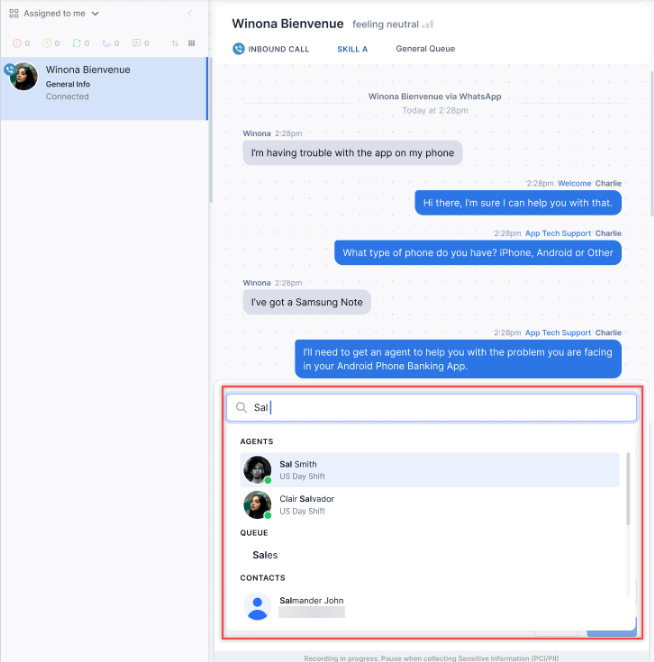
Agent Transfer¶
-
The following options are displayed when an agent is selected:
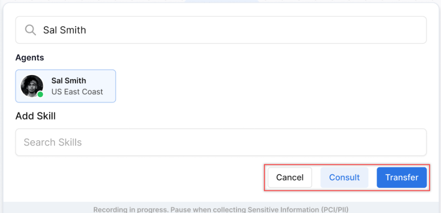
-
Click Transfer to directly transfer the call to another agent.
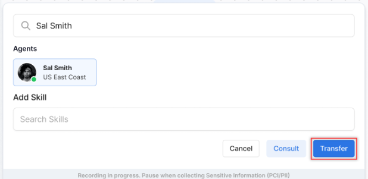
Note
Agents are not listed in Agent Transfers when the Chat and Email channel slots are set to zero.
Consult Call¶
-
Click Consult to initiate a call with another agent while the external call progresses.
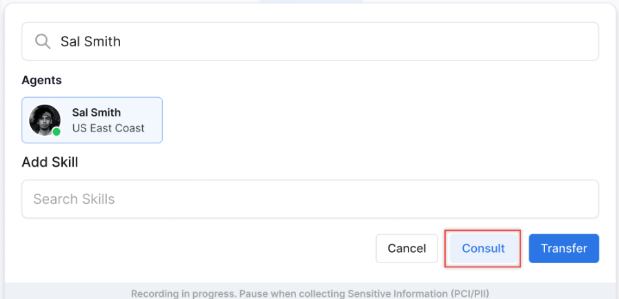
-
A consult call is initiated, and the external call is placed on hold.
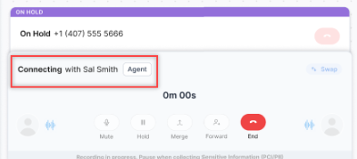
-
The consult call is displayed on the conversation tray of the receiving agent.
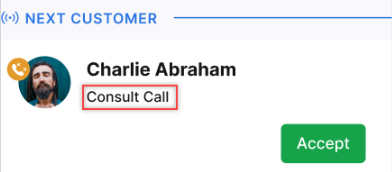
-
On accepting the call it appears on the Live Interaction pane of the receiving agent.
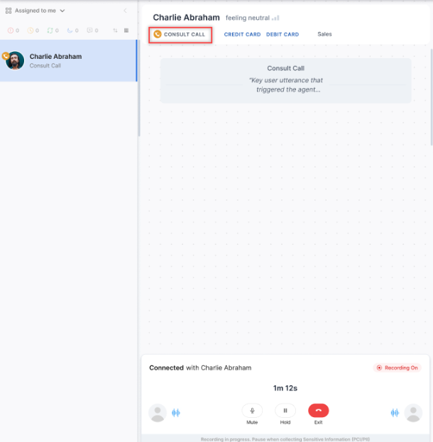
-
The initiating agent can continue the conversation with the receiving agent. The following options are available to the initiating agent.
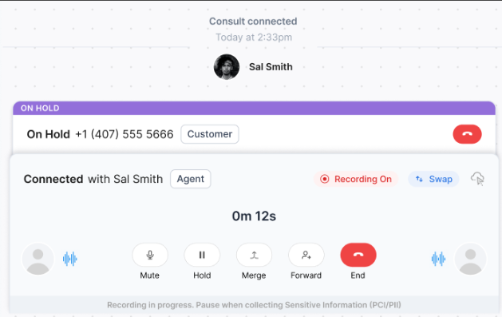
-
Click the Swap button to swap between the external and internal (consult) calls. When switching to the external call, the internal call is placed on hold and the recording is paused.
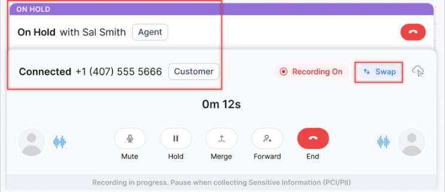
Conference Call¶
-
Click the Merge button to initiate a Conference Call with the customer.
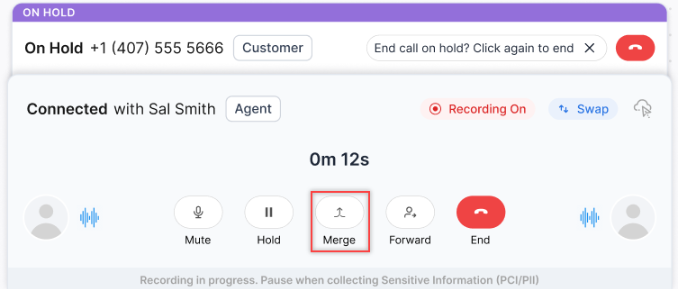
-
The conference call appears on the conversation tray of the receiving agent and a notification is displayed on the top right corner of the agent console.
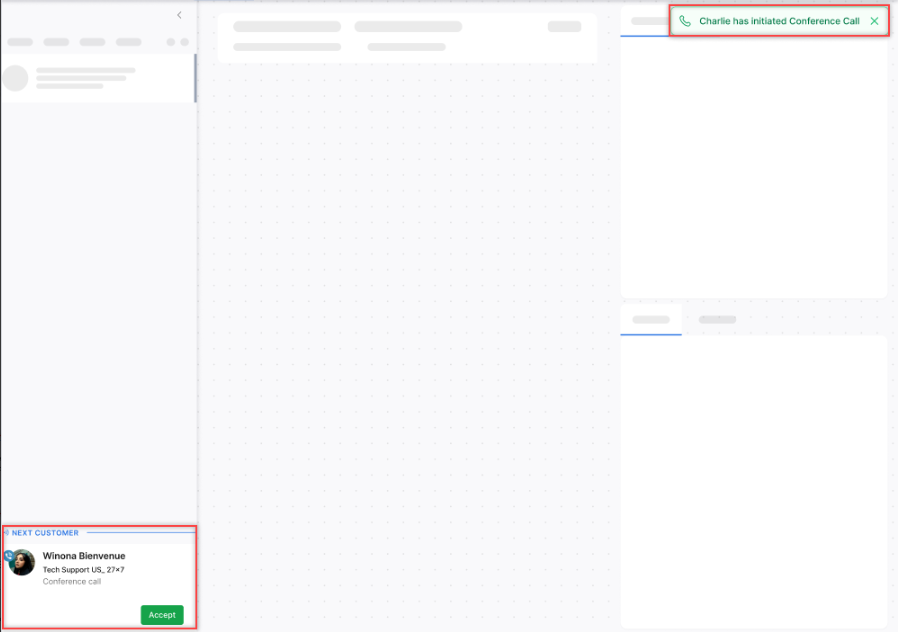
-
On accepting the call, the conference call is connected and the agents can no longer interact privately.
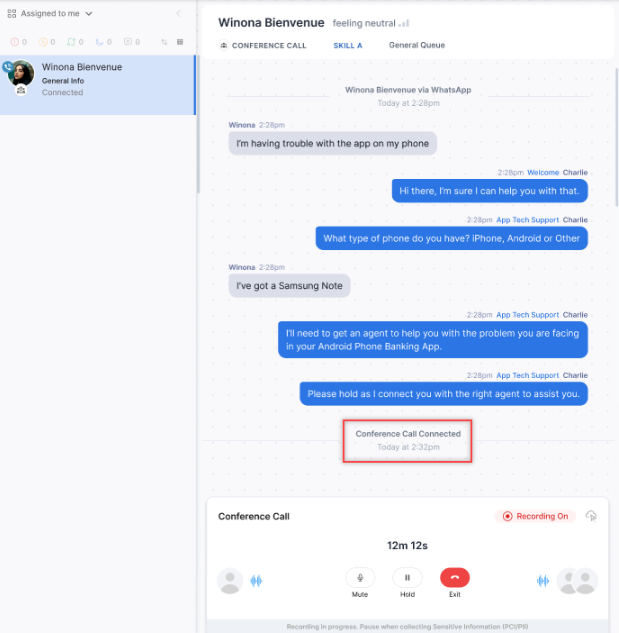
-
A notification is displayed on the top right corner of the console if the customer drops off during a conference call.
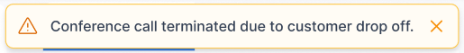
Warm Transfer¶
-
Click the Forward button to transfer the conversation to another agent.
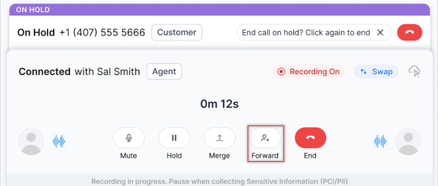
-
The initiating agent is disconnected and the conversation appears on the conversation tray of the receiving agent. A notification is displayed on the top right corner of the agent console.
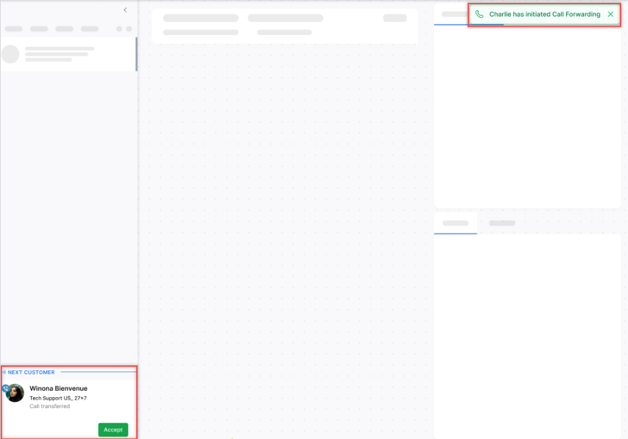
-
On accepting, the call is transferred to the receiving agent.
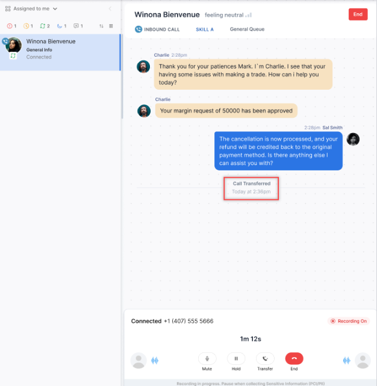
Queue Transfer¶
-
The following options are displayed when a queue is selected:
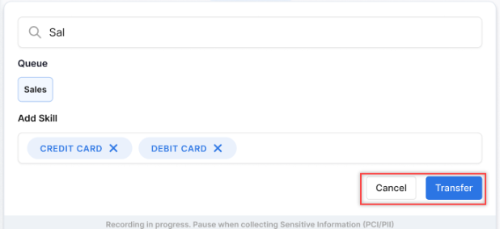
-
Click Transfer to directly transfer the call to another queue.
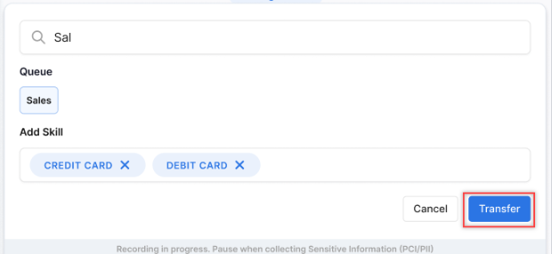
External Consult and Conference During an Ongoing Interaction¶
While interacting with a customer, if an agent needs to seek external consultation, they can initiate an outbound call as follows:
-
Click the Dialpad icon.
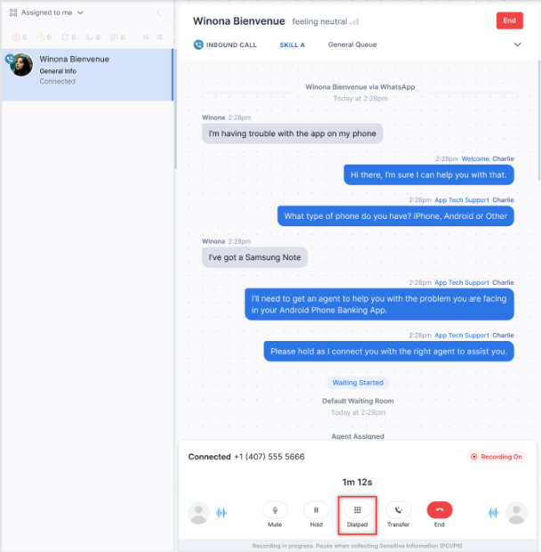
-
The External Consultation Call window appears. The external call can be dialed in three ways:
-
Manual Dialer:
- Enter the phone number with the country code, and the country’s flag will appear automatically on the left. Click the 🕻 button to initiate an external outbound call.
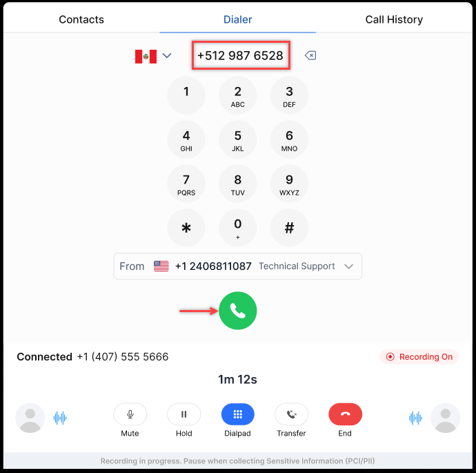
- Enter the phone number with the country code, and the country’s flag will appear automatically on the left. Click the 🕻 button to initiate an external outbound call.
-
Contacts Tab:
-
Click the Contacts tab, enter the name of the contact in the search bar, and press enter.
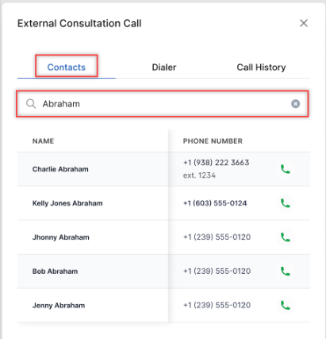
-
The search results are displayed. Click the 🕻 button.
.png "Call Button")
-
The phone number appears on the dialer tab. Click the 🕻 button to dial the call.
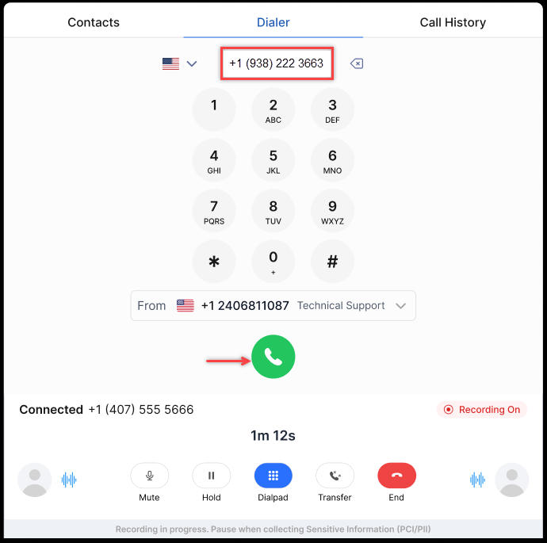
-
-
Call History Tab:
-
-
The external consult call is connected and the customer is placed on hold. The following options are available with agents during the external consult call:
- Mute – Mute the conversation.
- Hold – Place the external consult call on hold.
- Keypad – To enter DTMF inputs, enabling users to navigate IVR menus to connect external parties to the conference.
- Merge – Merge the external call with the existing inbound call (conference).
- Forward – Forward the call to another agent.
- End – End the external consult call.
- Swap (Top Right Corner)– Swap between the customer and the external call.
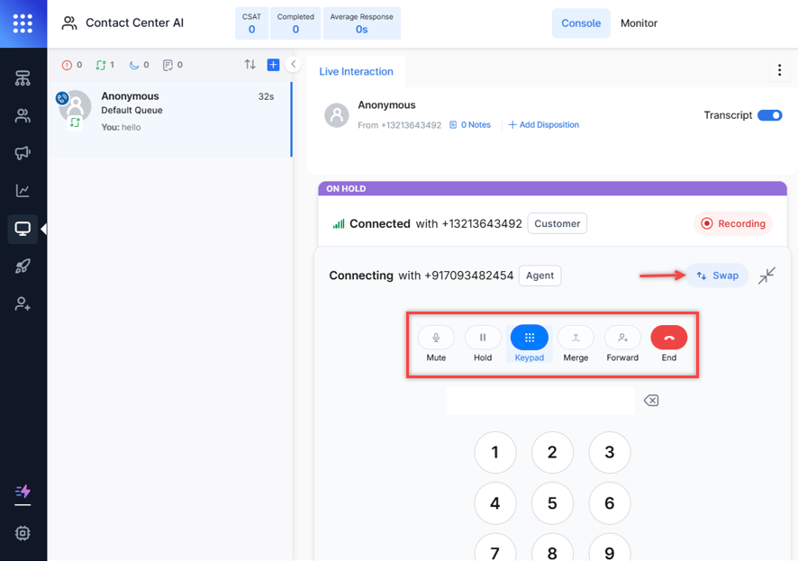
The Call History tab contains records of the outbound calls.
.png "Call History Tab")
.png "Call Button")
{kind=link}
{kind=link}
{kind=link}
{kind=link}
{kind=link}
{kind=link}
{kind=link}
{kind=link}
{kind=link}
{kind=link}
{kind=link}
{kind=link}
{kind=link}
{kind=link}
{kind=link}
{kind=link}
{kind=link}
{kind=link}
{kind=link}
{kind=link}
{kind=link}
{kind=link}
{kind=link}
{kind=link}
{kind=link}
{kind=link}
{kind=link}
{kind=link}
{kind=link}
{kind=link}
{kind=link}
{kind=link}
{kind=link}
{kind=link}
{kind=link}
{kind=link}
{kind=link}
{kind=link}
{kind=link}
{kind=link}
{kind=link}
{kind=link}
{kind=link}
{kind=link}
{kind=link}
{kind=link}
{kind=link}
{kind=link}
{kind=link}
{kind=link}
{kind=link}
Co-Browse¶
The Co-browse functionality allows agents and customers to collaborate in real time by sharing the customer’s web session. Agents can guide customers, highlight areas of interest, and if permitted, temporarily control the session to assist with navigation. Customers remain in control at all times. To configure Co-browse, refer to Co-browse Settings.
Note
Co-browse is supported only on websites that have the Web SDK embedded. It is not available in other channels such as Telegram, WhatsApp, etc.
Starting a Co-browse Session¶
Agent
-
In the Console, click the CoBrowse button.
-
Click Start CoBrowse on the pop-up window. A session request is sent to the customer.
{kind=link}
{kind=link}
{kind=link}
Customer
-
A pop-up request appears on the website.
-
If accepted, the agent can view the shared screen.
{kind=link}
Toolbar Options¶
Agent Tools
During a session, the agent can access the following toolbar options:
-
Color Selection: Choose different annotation styles for clarity.
-
Annotate: Draw or highlight elements on the customer’s screen. Use the Eraser tool to remove annotations or undo the most recent action.
-
Request Control: Ask permission to control the customer’s screen. If granted, the agent can navigate or type on behalf of the customer.
-
Release Control: Release control after completing an action.
{kind=link}
{kind=link}
{kind=link}
{kind=link}
Customer Tools
Customers always remain in control of their session and can access the following toolbar options:
-
Reconnect: Re-establish the session if connectivity issues occur.
-
Annotate: Mark areas on the screen to show the agent what needs attention.
-
Mask/Block Input: Hide sensitive information while typing, such as passwords or payment details.
{kind=link}
{kind=link}
{kind=link}
{kind=link}
{kind=link}
Initiate a Co-browse Session Between the Agent and the Customer Desktop Over the Phone¶
To initiate a Co-browse session when the connection between the agent and the customer desktop screen is over the phone:
-
In the Console, click the CoBrowse button.
-
The agent generates a security code to establish a website-to-website connection.
-
Share the security code with the customer.
-
The customer clicks the Co-browse button. A prompt appears to enter the code shared by the agent during the voice call.
-
After entering the code, the system establishes an end-to-end connection between the agent and the customer desktops to initiate co-browsing.
{kind=link}
{kind=link}
{kind=link}
{kind=link}
Initiate a Co-browse on the Console When Connected to an External System¶
When the agent and user connect through an external system (for example, Genesys) and need to initiate a co-browse session using the Agent console, they can achieve this using this feature.
Steps to initiate co-browse session:
{kind=link}
{kind=link}
{kind=link}
Sending Emojis¶
During a conversation, agents can click the Emoji icon to react to the conversation.
{kind=link}
Sending Attachments to Customers¶
During a conversation, agents can click the Attachments icon to share attachments with customers.
Note
Uploading files with malicious content (for example, HTML scripts) will be blocked, irrespective of the file extension. Retry after removing any embedded elements in the attachments.
{kind=link}
Agent Forms for Handling Sensitive Information¶
Agents can guide customers to fill in data using agent forms. The agent forms option is an additional security layer that helps customers provide information faster while maintaining confidentiality.
{kind=link}
When a user submits information on an agent form, the agent cannot directly view the submitted information when trying to open the data in their console. While the form headers are visible, the data is redacted. The information is revealed to the agents when they click the view button.
There are two ways to secure the agent form:
-
The entire form is secured by turning on a toggle at form creation. In this case, the view icon appears to view masked data in the header with the agent form text. All headers are visible, and only submitted data is masked.
-
Only specific fields are masked, retaining the redaction as per the configuration for that field. The data is unmasked when the agent clicks the unmask button.
{kind=link}
{kind=link}
Steps to share an Agent Form:
-
The form is sent to the customer and the status of the form on the live interaction pane shows Sent.
-
A message is displayed on the console once the customer submits the form and the status of the form shows Filled. Clicking the form/View Form on the confirmation message displays the form.
-
Click the Unmask icon to view the fields (applicable if mask is enabled during form creation).
The agent form fields are displayed.
The demonstration below shows how you can share an agent form with a customer and view the filled form.
{kind=link}
{kind=link}
{kind=link}
{kind=link}
{kind=link}
{kind=link}
{kind=link}
Manual PII Redaction¶
During live chat sessions, the manual redaction feature enables agents to remove or mask sensitive information, including Personally Identifiable Information (PII). This capability allows agents to respond immediately to accidental disclosures and helps prevent the storage or exposure of sensitive data, supporting compliance with data privacy regulations. Administrators can configure this functionality from Permissions.
Steps to manually redact PII data:
- Highlight the text you want to redact. The Redact Data option appears.
- Click Redact Data.
- In the confirmation prompt, click Redact Data again.
The selected text is redacted.
The following demonstration illustrates this process.
{kind=link}
{kind=link}
{kind=link}
{kind=link}
{kind=link}
Note
- Agents can select and redact only one user message at a time. They can select multiple lines within that message.
- Manual redaction applies to all digital channels except email.
- This feature does not support redacting messages in the user's console.
- Redaction applies to plain text, even if the text is already redacted.
Snooze¶
Waiting for customer responses or time spent on information retrieval can result in prolonged conversations and negatively impact agents’ performance metrics like Average Handle Time (AHT). Snooze allows agents to pause the conversation timer and resume it when the agent responds while freeing up slots for additional conversations.
Administrators can configure the snooze functionality from the Agent Settings.
Steps to snooze a conversation:
-
Click the Snooze button at the top of the live interaction window.
Note
The snooze function is not available if the conversation is overdue or a reply is due from the agent.
-
On the Snooze Conversation Until pop-up window, select the snooze duration from the available options or select a custom snooze duration.
-
To select a custom snooze duration, turn on the Custom Snooze toggle, configure your required snooze duration, and set the snooze duration.
-
Click Apply. The snooze duration is set, a message appears on the live interaction pane at the top, and an intimation is sent on the live interaction to the agent.
Hovering over a snoozed conversation in the conversation tray shows the duration for which the conversation is snoozed. It also displays the count of snoozed conversations.
{kind=link}
{kind=link}
{kind=link}
{kind=link}
{kind=link}
Emails¶
Agents can view and respond to emails on the console. The emails appear on the console as follows:
Threaded email structure: A threaded email structure features a visible distinction between agent and user emails.
{kind=link}
Collapsible email tiles: This allows agents to minimize or expand email threads as needed, reducing clutter and improving the organization of the email inbox.
{kind=link}
These settings can be configured from Agent settings.
Reply and Reply All: Agents can click Reply to open a response window addressed only to the most recent sender. Clicking Reply All opens a response window addressed to all participants in the email thread, including the original sender and all CC’ed recipients.
{kind=link}
Resend Emails: The Email Resend feature allows agents and supervisors to resend email interactions directly from the Agent Console. It supports two scenarios:
- Resending the same email content to the same recipient, including formatting and attachments.
- Editing the email before resending, which can include adding missed information, correcting errors, or attaching additional files.
Re-sent emails are linked to the original interaction for audit and traceability, ensuring agents maintain consistent and accurate communication with customers.
Steps to resend an email:
- Open the email interaction.
-
The email composer opens with the recipient details and original email content prefilled. (Optional) Update the email content.
-
- The re-sent email is sent as a new interaction but linked to the original interaction.
- The interaction log marks the message as Resent for clarity.
{kind=link}
Arrival Summary: Every email conversation begins with an Arrival summary once an agent accepts it. For more information about the arrival summary, refer to Arrival Summary.
{kind=link}
Distribution: You can distribute emails to multiple recipients using CC (Carbon Copy) and BCC (Blind Carbon Copy) fields.
{kind=link}
Standard Responses: You can choose from a library of configured standard responses.
-
Click the Standard Response icon at the bottom of the email text editor. The count of response templates in each category is displayed.
-
Click the category to view the standard response templates in that category.
-
Click the Standard Response from the list to use that response in the email.
Attachments: You can attach files and documents to the email to share relevant information or resources with customers. Attachments appear in a list format. If there are more than three attachments, a ‘View More’ button is displayed.
Click the Attachment icon to select and upload files.
Notes: You can add notes on the interaction (customer feedback, key points, next action, suggestions). This section includes any previous notes added by agents while interacting with the same customer.
To add a new note:
{kind=link}
{kind=link}
{kind=link}
{kind=link}
{kind=link}
{kind=link}
{kind=link}
{kind=link}
Outbound Email¶
Outbound email functionality is a key feature within Contact Center AI designed to streamline communication between agents and customers through email channels. It is crucial to reach out to customers proactively and provide personalized interactions based on their needs and preferences. Expanding omnichannel capabilities allows customers to be reached through various channels to address their needs. This allows seamless follow-up after interactions to guarantee satisfaction and provide timely support whenever required.
Send Outbound Email¶
Steps to send an outbound email:
-
Click the + button on the top right corner of the conversation tray.
-
The email panel is displayed, and an email conversation appears on the conversation tray. Enter the recipients' Email addresses, such as john.doe@xyz.com.
-
Enter the Subject and body of the email. The email address appears on the conversation tray and the subject appears as the email thread header.
-
You can perform the following actions:
Send:
Send & Close:
Click the down arrow button ”V” beside Send and click Send & Close.
A confirmation is displayed, and the email is sent. A disposition window appears.
If Wrap-up Code prediction is enabled, a disclaimer appears requesting users to verify the content before using it.
Note
-
The send button is activated when all mandatory fields (recipient, subject, queue, and email body) are filled. Sent conversations remain in the agent's conversation tray until closed.
-
Sending an email consumes one slot from the agent's allocation and appears on the Monitor tab.
-
Outbound emails occupy the same slots as any other configured email. Agents can create as many outbound emails as their allocated email slots allow.
Draft:
Click the X on the top right corner of the email editor window.
The editor window is minimized, and the mail is saved as a draft.
Drafts are automatically saved and remain accessible in the following scenarios:
- After an agent logout and subsequent login.
- Network interruptions and subsequent re-connections.
- The current email content is saved as a draft if the editor is closed.
- Drafts are saved only after the mandatory fields (recipient, subject, queue, and email body) are updated.
Multiple drafts can be saved for individual email conversations. Each draft is easily identifiable and accessible within its respective email thread.
Delete:
Click the Delete (bin) icon on the bottom left corner of the editor.
A confirmation message is displayed. Click Delete. The email is deleted.
-
{kind=link}
{kind=link}
{kind=link}
{kind=link}
{kind=link}
{kind=link}
{kind=link}
{kind=link}
{kind=link}
{kind=link}
{kind=link}
{kind=link}
{kind=link}
{kind=link}
Color Codes¶
Color codes help in easy identification and better readability of conversations on digital channels.
{kind=link}
{kind=link}
{kind=link}
Add Notes to Interactions¶
You can add notes on the interaction (customer feedback, key points, next action, suggestions). This section includes any previous notes added by agents while interacting with the same customer.
To add a new note:
{kind=link}
{kind=link}
Modify Skills in Interactions¶
To modify skills in a live interaction when the Live Interaction option is selected in Skill Modification:
{kind=link}
{kind=link}
Transfer Interactions¶
Contact Center AI allows agents to transfer ongoing conversations to other queues, other agents, or both. The Agent Console displays transfer options according to the Transfer Destinations setting. In the example screenshots below, both queues and agents are enabled for transfers.
Transfer to Another Queue
To transfer a conversation to another queue when the Enforce Skill Match for Transfers setting is enabled:
-
Click Transfer at the top of the live interaction pane. You can also use the shortcut key Alt + Shift + T to open the transfer window.
-
Search for a queue in the search bar on the Transfer to window.
-
Select a queue from the dropdown list. Agents with matching skills are displayed for the queue during the transfer.
-
Click Transfer. The conversation gets transferred to the selected queue.
{kind=link}
{kind=link}
{kind=link}
Note
- When transferring an interaction to another queue, you need to consider the following rules:
- The system verifies the valid hours of operation and displays the online queues.
- If the skill match option is enabled, the destination queue must have agents with the right skills based on the skill match rules. If there are no agents with the required skills, the conversation will wait for the maximum wait period assigned to the destination queue and then timeout to the no agents available scenario.
To transfer a conversation to another queue when the Skill Modification setting is enabled:
-
Click Transfer at the top of the live interaction pane. You can also use the shortcut key Alt + Shift + T to open the transfer window.
-
Search for a queue in the search bar on the Transfer to window. All matching queues are displayed.
-
You can add or delete skills to the interaction before transferring it to another queue.
-
Click Transfer. The conversation is transferred to the selected queue.
{kind=link}
{kind=link}
{kind=link}
Transfer to Another Agent
To transfer a conversation to another agent:
-
Click Transfer at the top of the live interaction pane. You can also use the shortcut key Alt + Shift + T to open the transfer window.
-
Search for an agent in the search bar on the Transfer to window.
- Select an available agent.
- Click Transfer. The conversation gets transferred to the selected agent.
{kind=link}
Note
If the customer ends the chat before the agent completes the transfer, Contact Center AI will drop the transfer, and the conversation will not be assigned to any queue or agent. WebSdk v1.0 supports this feature only for chat conversations.
Transfer to External Contacts
An agent can transfer the call to an external contact during a voice interaction. An administrator must enable this feature in Agent Settings to allow external transfer of ongoing customer calls. To transfer a conversation to an external contact from the Agent Console, follow these steps:
-
Click Transfer at the top of the live interaction pane. You can also use the shortcut key Alt + Shift + T to open the transfer window.
-
Search for an external contact in the search bar on the Transfer to window.
- Select an available contact.
-
Click Transfer. The conversation gets transferred to the selected contact.
Note
- The outbound transferred call by the agent will be a blind transfer.
- For the agent, the call ends like other interactions.
- The agent must add a disposition and perform After Call Work (ACW).
{kind=link}
End Interactions¶
-
To end an interaction session, click the End button at the top right of the Live Interaction pane.
-
Once clicking End, you must confirm that you want to end the interaction. Click Yes to do so, or otherwise, click No.
Clicking Yes ends the session and moves the interaction to After Call Work.
{kind=link}
{kind=link}
Timer After Caller Disconnects a Voice Call¶
When a caller disconnects, agents can either call back or end the call. If an agent does not take any action, a depleting timer prompts the agent to take action within a specified timeframe. By default, this feature is disabled for existing users. Administrators can enable this functionality from the Agent Settings.
Timer when the caller disconnects the call: A depleting timer is displayed on the live interaction pane, with options to end the call or call back.
{kind=link}
Timer when the caller disconnects during a conference call: A depleting timer is displayed on the live interaction pane, with options to close or rejoin the conference call.
{kind=link}
The call transitions to After Call Work (ACW) at the end of the configured timeout duration.
After Call Work (ACW)¶
If ACW is enabled, then the conversations are managed based on the ACW configuration:
Immediate Slot Release
- Slots are freed up, allowing other conversations to be accepted.
- The close button is enabled when all the required disposition codes are selected.
- There is no time restriction for selecting the disposition codes and they are available until the agent manually closes them.
{kind=link}
Timed Slot Release
- Agents can see a countdown timer when the conversation ends, indicating the time left to provide a disposition.
- The slot becomes available if the agent submits a disposition or when the timer elapses.
-
Empty disposition fields are filled with a ‘system-generated disposition code’ if no disposition is provided within the allotted time.
-
When the disposition timer expires, the system displays a message to the agent.
-
For conversations transferred to another queue, the final queue’s disposition mode is applied to determine the required dispositions.
{kind=link}
{kind=link}
If ACW is disabled the conversation disappears from the agent console at the end of the conversation, freeing the slots for accepting other conversations. Agents do not receive any disposition sets or summary notes related to these conversations.
Dispositions¶
A Disposition Code is a short label assigned to the outcome of an interaction. Learn more.
Dispositions can be assigned in two ways:
-
During the conversation (Dynamic):
-
The disposition is added. You can either Transfer or End the conversation.
-
When you click End, a confirmation message is displayed. Click Yes to confirm.
-
The Disposition & Notes window will appear, and you can make any necessary changes. Click Close, and the conversation will close with the disposition attached.
Note
If the disposition and description are not completed during the After Call Work (ACW) period, the system automatically closes the conversation with a system-generated disposition.
-
At the end of the conversation:
- Select the Conversation in your tray.
- You must select a Status from the following available options:
- Resolved: Select when the customer query is resolved.
- Abandoned: Select if the customer has abandoned the conversation and is no longer responding.
- Pending: Select if the query is still pending resolution.
- Custom: Administrators can create custom disposition codesto address specific business needs. Select according to your use case.
- Optionally, type a Description of your reason for selecting the disposition.
- Click Close to close the conversation.
{kind=link}
{kind=link}
{kind=link}
{kind=link}
{kind=link}
Intelligent Disposition Code Suggestions¶
When enabled, agents receive intelligent disposition code suggestions automatically at the end of customer conversations. The feature uses LLM analysis of the full conversation transcript and disposition set metadata to recommend the most appropriate wrap-up code. Suggestions appear prominently in the disposition bar and can be accepted with one click or overridden manually, ensuring higher accuracy and reduced wrap-up time. Learn more.
Steps to receive intelligent disposition code suggestions:
-
The Disposition & Notes window opens with suggested disposition codes.
-
Agents can select a disposition code to accept it, or choose multiple disposition codes if needed, and then click Close.
{kind=link}
{kind=link}
{kind=link}
Translate Conversations in Real Time¶
Agents can translate conversations in real time on the live interaction pane. Administrators can enable this functionality from Translation Configurations.
Steps to translate real-time conversations:
-
Click the Translate button at the top right corner of the live interaction pane.
-
Select the language from the dropdown. Click Mark as Default to make it the default language for translation.
{kind=link}
{kind=link}
{kind=link}
{kind=link}
Information Provided to Agents and Customers During Live Interactions¶
You can interact with customers within the Live Interaction area of the Agent Console.
{kind=link}
The Live Interaction area provides access to features and information that can be used during live conversations, as follows:
Arrival Summary¶
Every conversation begins with an Arrival summary once an agent accepts it.
This section displays the live interaction summary with the following details:
- Agent Name: Identifies the agent who is handling the live interaction.
- SUMMARY: Conversation Summary leading up to the transfer. In case of multiple transfers, the summary of all transfers is shown.
- Queue: Indicates the queue in which the conversation is placed.
- Wait Time: This shows the time that the chat has been waiting for an agent to respond.
- Intent: Shows the customer’s primary purpose for initiating the live interaction.
- Sentiment: Captures the customer sentiments based on their responses.
{kind=link}
After accepting the conversation, all interactions by the agent are displayed below the arrival summary. If generating the arrival summary takes time, a loading indicator appears until the summary is ready. After an agent transfer, Agent 2 will see the entire summary of the prior conversation, displayed immediately after the last message from Agent 1.
Note
When sentiment analysis is configured but no utterances are available to analyze, the Sentiment field in the arrival summary displays "Unavailable" instead of remaining blank.
Refreshing Bot-Customer Interactions¶
A reload button appears at the top of the conversation transcript when the bot-customer conversation transcript is missing. Clicking Reload displays the missing information.
{kind=link}
Typing Chat Indicator¶
When the agent types a response during a chat conversation with a customer, the customer’s chat window displays three dots, indicating that the agent is responding to the customer.
Do the following to enable the typing indicator for chat conversations:
- To integrate bots chat capability into custom applications, install WebSDK 3.0 on your server. WebSDK 3.0 is a set of libraries that offer a quick and convenient way to do this. Refer to the installation instructions for additional information on installing WebSDK 3.0.
-
To receive read receipts, and typing indicators, install the AgentDesktop plugin in WebSDK 3.0. The Agent Desktop plugin allows the user to interact with the human agent through the AI Agent and supports the following features:
- Audio Calling
- Video Calling
- Co-browse
- Screen Sharing
Refer to the installation instructions for additional information on installing the plugin.
Request Supervisor Support¶
Agents can send requests to the appropriate supervisors for assistance. The supervisor receives a notification and can take necessary actions to resolve the issue. Administrators can configure this functionality from Permissions
Steps to request supervisor assistance:
-
Click the ellipsis (⋮) at the top right corner of the Live Interaction pane, and click Request Supervisor Support.
-
The agent can request support from a specific supervisor or multiple supervisors. The supervisor list displays either all supervisors or only those assigned to the relevant skill.
-
A notification is displayed, and the request is sent to supervisors who are logged in to the platform and have their status set to Available.
-
A notification is displayed to the supervisor. Supervisors can manage the notifications Learn more.
-
The Internal Chat window appears after accepting the agent’s request. The supervisor can support the agent on the internal chat.
{kind=link}
{kind=link}
{kind=link}
{kind=link}
{kind=link}
Real Time Sentiment Capture¶
Agents can view customers' real-time sentiments during conversations (Chat, Voice, and Email) on the Conversation Tray and the Live Interactions pane. Administrators can enable the real-time sentiment capture functionality. Learn more.
{kind=link}
{kind=link}
{kind=link}
When agents click the sentiment indicator, a graph appears, visually representing emotional fluctuations throughout the interaction. Agents gain immediate insight into customer emotions. This insight helps them adjust their tone, approach, and responses promptly, leading to improved empathy and more effective issue resolution. Agents can also customize the graph to focus on specific timeframes or sentiment ranges, allowing deeper analysis when needed.
{kind=link}
Stacked Messages, Timestamp, and Read Status¶
- Any message sent by an agent will display along with a date and timestamp.
- If the customer does not respond to the first message sent by an agent, the message displays a timestamp, and the following messages will not show a timestamp until the clock minute changes. For example, If an agent sends a message at 11:30:24, the second message at 11:30:36, the third message at 11:30:45, and the fourth message at 11:31:08, then the first three messages will be stacked under one timestamp, and the fourth message will have a different timestamp.
- If the customer responds in the same minute, the response will display with the date and timestamp. The responses from the customer will only show a timestamp once the clock minute changes.
- Agents can see the read status on the last message sent. If the messages are stacked, the read status will appear only against the most recent one.
{kind=link}
Behavior When Login Prep Status is Enabled¶
A message appears on the console for the duration configured on the Agent Status page. This status allows an agent to prepare themselves before they start receiving interactions.
{kind=link}
{kind=link}
At the end of the Login Preparation time slot, the system automatically marks the agent as ‘Away,’ and a pop-up message appears with the following content:
{kind=link}
Agents can choose the following options:
Mark as Available – Clicking this button changes an agent’s status to Available.
Keep Away Status – Clicking this button keeps the status as Away. If agents click Keep Away Status, they remain in the ‘Away’ state with a notification displayed for the ‘Away’ status. Agents can mark themselves as ‘Available’ when they are ready to receive conversations.
Behavior During Active Interactions¶
If Auto-Answer Is Enabled, Transfer and End are Disabled Until the First Agent Response¶
If the Auto Answer mode is enabled in Agent Settings, the Transfer/End buttons do not display on the Live Interaction pane until the assigned agent sends the first message.
Below is what the Agent Console looks like before the first message from the agent:
{kind=link}
Below is what the Agent Console looks like after the first message from the agent:
{kind=link}
Behavior When an Agent Changes Their Status¶
A warning message displays if an agent changes their status to Away or a custom status tagged to Away during an active interaction.
{kind=link}
Behavior When an Agent Tries Logging Out¶
Contact Center AI does not permit agents to log out during an ongoing conversation.
If an agent tries to log out during an ongoing conversation, Contact Center AI prevents the agent from logging out without transferring or closing the conversation. A pop-up window is displayed along with the following message:
If an agent logs out suddenly (the browser is closed or the system crashes, for example), then the counter for Agent inactivity starts and after the threshold, any active conversations are assigned back to the Queue.
{kind=link}
Behavior When an Agent Does Not Accept/Send a Response Within a Specified Time¶
If an agent does not accept/send a response within a specified time, the system automatically changes the status to Away (Idle).
This status is not available for selection by an agent.
{kind=link}
Behavior When No Agents are Available¶
If no agents are logged in, conversations will wait in the queue till the maximum wait time specified for the queue. After the queue max timeout occurs, the "no agents available" flow is triggered. This is enabled at the account level for new accounts and applies to all channels. For existing accounts, the existing routing logic is applicable. For accounts wanting to modify their routing logic, contact Support.
CSAT Survey¶
The CSAT (Customer Satisfaction) survey is essential for contact centers because it provides valuable feedback on customer satisfaction levels, enabling continuous improvement of service quality.
CSAT surveys can be triggered based on the scenarios configured by administrators/supervisors while Creating a Survey:
- Show to Everyone: If the “Show to Everyone” scenario is configured while creating the survey, the survey is triggered automatically for every interaction that concludes between an agent and a customer on digital or voice channels.
- Show to Every nth User: If the “Show to nth User” scenario is configured while creating the survey, the survey is triggered automatically for the nth interaction that concludes between an agent and a customer on digital or voice channels. For example: If the frequency is set to 2, then the survey is triggered for every second customer.
-
Agents can trigger: If the “Agents can trigger” scenario is configured while creating the survey, the survey can be triggered by agents at any point during the interaction as follows:
-
Click the Send Survey button on the right corner above the text editor. The send survey button is highlighted and a survey icon appears on the End button at the top right corner of the live interaction pane.
-
The survey is triggered to the customer when the agent clicks the End button with the survey selected.
-
{kind=link}
For the above scenarios where the agent actively participates in interactions and the interactions end, the feedback from surveys contributes to their CSAT scores.
CSAT surveys can also be triggered in scenarios when there are no active participants:
- Outside hours of operation
- No Agents Available flow
- Agent/Customer side terminations or system terminations due to user inactivity
- Sub-flows (No agents flow/Out of hours flow)
For these scenarios, the CSAT scores are assigned to the interaction.
Note
CSAT surveys for voice channels apply only to inbound calls where customers contact agents. Support for callbacks and other call types is planned for future releases.